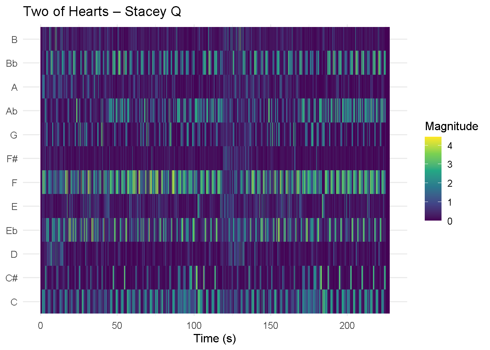
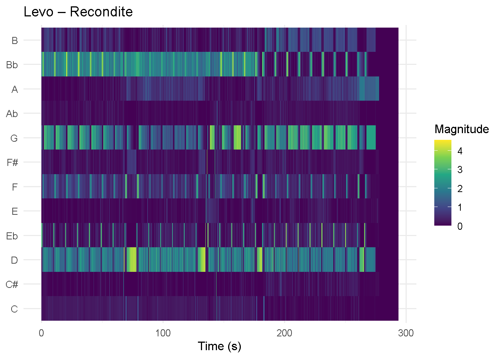
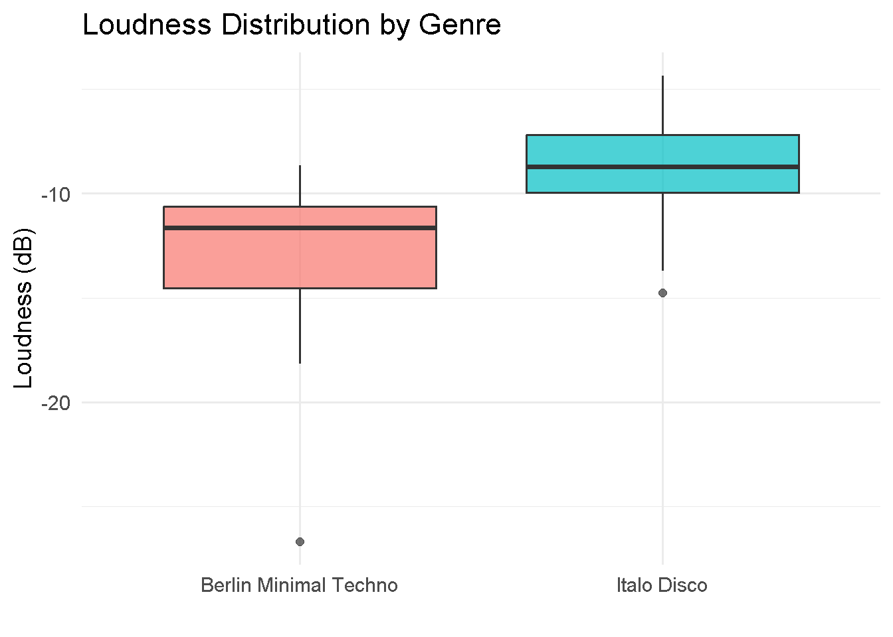
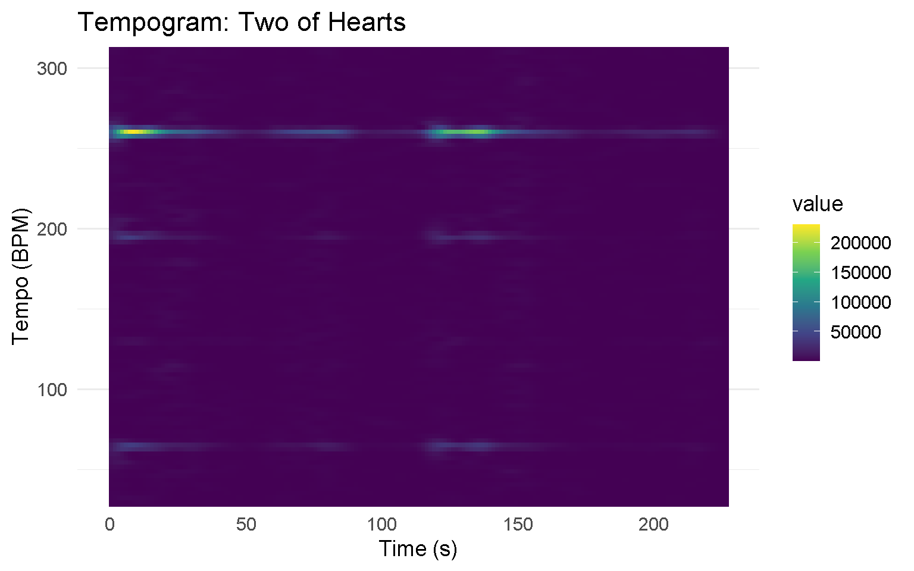
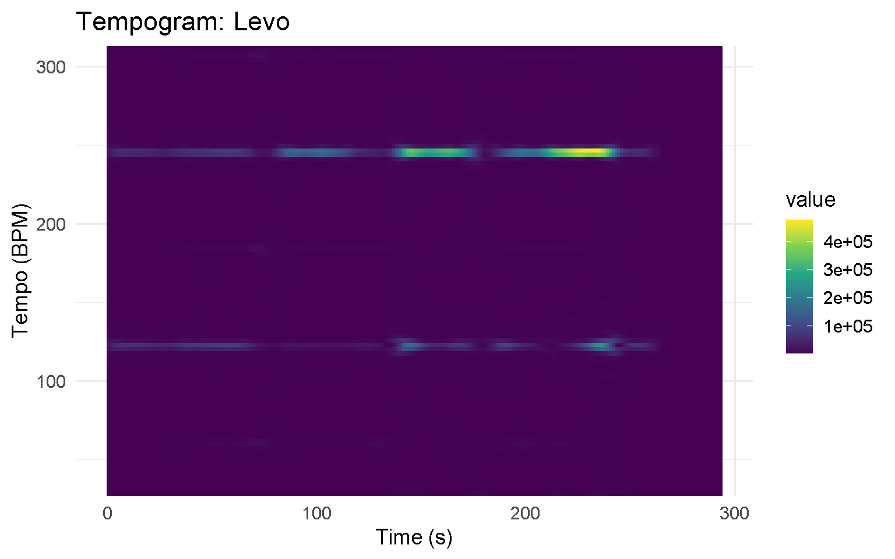

This portfolio presents a computational comparison between two electronic dance genres: Italo disco (1979–1986) and Berlin minimal techno (2000–2024). The goal is to investigate how these genres differ not only in track-level Spotify features, but also in deeper structural properties such as harmony, timbre, loudness, and rhythmic organisation.
The corpus consists of two curated playlists of 22 tracks each. Although these playlists were not intended to include every important track in each genre, the portfolio assumes that the selected tracks are sufficiently representative of the broader styles. So any conclusions should be seen first as conclusions about this specific set of songs, and only more carefully as conclusions about the genres as a whole.
Two representative tracks were selected for closer analysis: Two of Hearts by Stacey Q and Levo by Recondite. I selected these tracks because they featured the musical differences I wanted to examine computationally. Although Two of Hearts is an American rather than Italian track, it was included because it clearly shows key Italo Disco features, including looping minor-key harmonies, synthesizer-driven textures, and repetitive chord-based structure. Additionally, the genre itself was not limited to Italy alone, since it developed into an international phenomenon in the early 1980s. Levo was chosen as a representative example of Berlin Minimal Techno because of its emphasis on sustained tonal centres, gradual development, and timbral transformation.
The portfolio combines Spotify audio features from Exportify, including danceability, loudness, valence, and tempo, with time-based features such as chroma, MFCCs, and tempograms extracted in Sonic Visualiser and analysed in R Studio using compmus. Spotify audio features are useful but imperfect descriptors. They make corpus-level comparison possible, but they do not capture every musically meaningful aspect of genre or listening experience.
The central question of this portfolio is whether the difference between Italo Disco and Berlin Minimal Techno can be captured computationally, and if so, whether this lies in surface features or in more underlying patterns of pitch, timbre, and repetition over the course of the track.
Track-Level Features
Tempo and Danceability
This first comparison focuses on tempo (BPM) and danceability. Rather than assuming that tempo directly determines danceability, this analysis asks whether the two genres differ in how tempo and danceability are related.
library(tidyverse)
Warning: package 'tidyverse' was built under R version 4.4.3
Warning: package 'ggplot2' was built under R version 4.4.3
Warning: package 'purrr' was built under R version 4.4.3
── Attaching core tidyverse packages ──────────────────────── tidyverse 2.0.0 ──
✔ dplyr 1.1.4 ✔ readr 2.1.5
✔ forcats 1.0.0 ✔ stringr 1.5.1
✔ ggplot2 4.0.0 ✔ tibble 3.2.1
✔ lubridate 1.9.4 ✔ tidyr 1.3.1
✔ purrr 1.2.1
── Conflicts ────────────────────────────────────────── tidyverse_conflicts() ──
✖ dplyr::filter() masks stats::filter()
✖ dplyr::lag() masks stats::lag()
ℹ Use the conflicted package (<http://conflicted.r-lib.org/>) to force all conflicts to become errors
Rows: 22 Columns: 24
── Column specification ────────────────────────────────────────────────────────
Delimiter: ","
chr (8): Track URI, Track Name, Album Name, Artist Name(s), Release Date, ...
dbl (14): Duration (ms), Popularity, Danceability, Energy, Key, Loudness, M...
lgl (1): Explicit
dttm (1): Added At
ℹ Use `spec()` to retrieve the full column specification for this data.
ℹ Specify the column types or set `show_col_types = FALSE` to quiet this message.
Rows: 22 Columns: 24
── Column specification ────────────────────────────────────────────────────────
Delimiter: ","
chr (8): Track URI, Track Name, Album Name, Artist Name(s), Release Date, ...
dbl (14): Duration (ms), Popularity, Danceability, Energy, Key, Loudness, M...
lgl (1): Explicit
dttm (1): Added At
ℹ Use `spec()` to retrieve the full column specification for this data.
ℹ Specify the column types or set `show_col_types = FALSE` to quiet this message.
corpus <-bind_rows(italo, minimal)genre_counts <- corpus %>%count(genre)genre_correlations <- corpus %>%group_by(genre) %>%summarise(n_tracks =n(),correlation =cor(Tempo, Danceability, use ="complete.obs") )ggplot(corpus, aes(x = Tempo, y = Danceability, color = genre)) +geom_point(alpha =0.75, size =2.5) +geom_smooth(method ="lm", se =TRUE, linewidth =0.8) +facet_wrap(~ genre) +labs(title ="Tempo and Danceability in Italo Disco and Berlin Minimal Techno",subtitle ="Track-level comparison with linear trends and uncertainty bands",x ="Tempo (BPM)",y ="Danceability (0–1)" ) +theme_minimal(base_size =14) +theme(strip.text =element_text(face ="bold"),legend.position ="none" )
`geom_smooth()` using formula = 'y ~ x'
The plot shows that both genres have tempo ranges typical of dance music, but the relationship between tempo and danceability differs in strength and direction. The regression lines provide a useful summary of the overall pattern, while the confidence bands show that the relationship remains somewhat uncertain.
Danceability is influenced by a combination of factors, including tempo, rhythmic regularity, beat strength, and overall regularity. In addition, other musical features such as energy and texture may also shape how danceable a track feels. Therefore, the following sections will move beyond track-level features to examine pitch organisation, timbre, loudness, and rhythm in more detail.
Chroma / Pitch
To compare harmonic structure at the level of local pitch content, chromagrams were generated for one representative track from each playlist: Two of Hearts (Italo Disco) and Levo (Berlin Minimal Techno). Chroma features show the intensity of each pitch class (C, C#, D, etc.) over time, independent of octave. They were extracted in Sonic Visualiser and exported as CSV files.
ggplot(two_long, aes(x = Time, y = Pitch, fill = Magnitude)) +geom_tile() +scale_fill_viridis_c() +labs(title ="Two of Hearts – Stacey Q",x ="Time (s)",y =NULL ) +theme_minimal(base_size =12)

ggplot(levo_long, aes(x = Time, y = Pitch, fill = Magnitude)) +geom_tile() +scale_fill_viridis_c() +labs(title ="Levo – Recondite",x ="Time (s)",y =NULL ) +theme_minimal(base_size =12)

The chromagrams already show a clear difference in harmonic organisation. Two of Hearts shows multiple pitch classes being active at the same time, forming recurring vertical groupings that suggest chord-based harmony and repeated harmonic cycles. This fits the style of Italo Disco, where stable chord progressions and tonal repetition often play a central role.
On the other hand, Levo shows fewer simultaneously active pitch classes, each of them often sustained over a longer time span. This creates a more horizontally continuous pattern, consistent with harmonic stasis, the prolonged use of a limited set of pitches with gradual variation over time.
Chroma Self-Similarity
While the chromagrams show which pitch classes are active at each moment, a chroma self-similarity matrix (SSM) shows how similar different moments in the same track are to one another. This makes it easier to identify repeated sections and long-distance harmonic recurrences.
The chroma SSMs make the structural difference easier to see. In Two of Hearts, repeated off-diagonal patterns show that similar chord patterns return in different parts of the song. This suggests that harmonic repetition is an important part of the track’s structure.
In Levo, the pattern of long-distance harmonic recurrence is weaker and more spread out. This does not mean the track lacks structure, but rather that its form depends less on changing chord progressions and more on repetition within a limited tonal space. In other words, the track is harmonically restrained even when it remains strongly patterned.
Taken together, the chromagrams and chroma SSMs suggest that Two of Hearts is more strongly organised by repeating harmonic cycles, while Levo relies more on sustained tonal centres and gradual change.
Note on Key Estimation
A further key-estimation analysis was also explored using pitch-template matching, following the course material on chordograms and keygrams. Although this provided some support for the contrast between tonal stability in Two of Hearts and greater ambiguity in Levo, the resulting visualisation was less interpretable than the chromagram and chroma self-similarity matrix. For that reason, the pitch-based comparison in this portfolio focuses on those clearer representations.
Timbre
Timbre Self-Similarity (MFCC)
As an addition to the pitch-based comparison, I also computed self-similarity matrices based on MFCC features. Whereas chroma focuses on pitch-class content, MFCCs capture timbral properties such as spectral shape and sound colour. This makes them useful for showing whether sections are connected through similar texture and production qualities, even when harmonic content remains relatively stable.
In Levo, the block-like regions and clearer boundaries suggest more noticeable timbral change across sections, which is consistent with Berlin Minimal Techno.
In Two of Hearts, the timbral SSM appears more consistent across time, suggesting a more stable overall sound between sections.
Together, the pitch- and timbre-based SSMs show that the two tracks organise repetition differently. Two of Hearts relies more on harmonic repetition, while Levo relies more on timbral change.
Loudness
Loudness and Energy
Loudness (measured in decibels) offers another way to understand how musical intensity is spread across tracks. Loudness reflects the overall energy level of a track and can contribute to whether the music feels more varied or more steady.
library(tidyverse)italo <-read_csv("ITAD.csv", show_col_types =FALSE) %>%mutate(genre ="Italo Disco")minimal <-read_csv("BMT.csv", show_col_types =FALSE) %>%mutate(genre ="Berlin Minimal Techno")corpus <-bind_rows(italo, minimal)ggplot(corpus, aes(x = genre, y = Loudness, fill = genre)) +geom_boxplot(alpha =0.7) +labs(title ="Loudness Distribution by Genre",x ="",y ="Loudness (dB)" ) +theme_minimal(base_size =14) +theme(legend.position ="none")

This boxplot compares loudness across the two genres. Both show a broadly similar range, as is expected for electronically produced dance music. However, differences in variability could reveal how changeable the tracks are in their overall energy.
By capturing this perceived intensity, it supports patterns already observed in timbre and rhythm: gradual changes in loudness and perceived energy may align with the timbral build-ups observed in Minimal Techno, while more stable loudness levels may correspond to the consistent groove typical of Italo Disco.
Rhythm / Tempo
Rhythmic Structure: Tempograms
To analyse rhythmic structure, tempograms were computed for both tracks. A tempogram shows how strongly different tempo periodicities (in BPM) are present over time. Brighter regions indicate stronger rhythmic regularity at a given tempo.
Warning: Raster pixels are placed at uneven horizontal intervals and will be shifted
ℹ Consider using `geom_tile()` instead.

plot_tempogram("levo-tempogram.csv", "Levo")
Warning: Raster pixels are placed at uneven horizontal intervals and will be shifted
ℹ Consider using `geom_tile()` instead.

The tempograms show how rhythmic periodicities are distributed over time. In both cases, there is a clear group of energy around the 120–130 BPM range, which corresponds to the typical tempo of dance music. This can be seen in the visualisation as a horizontal band of higher intensity.
However, the two tracks differ in how stable and obvious this periodicity is. In Levo, the band around the main tempo is more continuous and stable over time, suggesting a highly regular and constant rhythmic structure, which aligns with minimal techno. In Two of Hearts, the same tempo range is present but appears less constant, which suggests more rhythmic variation.
The tempogram shows not just tempo itself, but the strength of rhythmic repetition at different periodicities. The strongest bands represent the perceived beat, while weaker bands could reflect rhythmic structures such as half-time or double-time patterns.
These observations support the broader contrast developed throughout the portfolio. Although both tracks share a similar tempo range, Levo depends more on rhythmic stability and persistence, whereas Two of Hearts introduces more variation within that rhythmic framework.
Clustering or Classification
Classification of Italo Disco and Berlin Minimal Techno
As a final step, I trained a classifier on Spotify track-level audio features to test whether Italo Disco and Berlin Minimal Techno can be distinguished computationally. This extends the earlier visual analyses by asking whether the differences in pitch, timbre, and rhythm also appear in higher-level track features.
To do this, a random forest classifier was trained on the two playlists. I first used a broader set of Spotify features, and then a smaller feature set to see whether similar performance could be achieved with fewer variables.
importance_df <-extract_fit_parsnip(rf_fit)$fit$variable.importance %>%enframe(name ="feature", value ="importance") %>%arrange(desc(importance))ggplot(importance_df, aes(x =reorder(feature, importance), y = importance)) +geom_col() +coord_flip() +labs(title ="Feature Importance in the Full Random Forest Model",x =NULL,y ="Importance" ) +theme_minimal(base_size =14)
The full-feature classifier tests whether the two genres can be separated using Spotify audio features alone. The confusion matrix shows how many test tracks were correctly or incorrectly assigned to each genre, while the accuracy score summarises the overall performance.
The reduced-feature model asks whether similar results can be achieved with a smaller set of variables. The reduced model performs just as well as the full model, which suggests that a smaller set of variables already captures much of the difference between the two playlists.
The feature-importance plot helps to explain what is driving the classification. Variables such as instrumentalness, valence, loudness, danceability, and tempo appear to contribute most strongly. The separation between the playlists is not only visible in structural features, but also in broader stylistic differences, with Berlin Minimal Techno tending to be more instrumental and texturally gradual, and Italo Disco showing clearer harmonic cycles with a more song-like form.
With 22 tracks per playlist, the dataset is large enough to explore classification, but still small enough to be interpreted cautiously. Even so, the fact that the genres can be separated at all suggests that the differences described earlier in pitch organisation, timbre, and rhythmic structure are also reflected in track-level audio features.
Hierarchical Clustering
In addition to classification, I used hierarchical clustering to examine whether tracks from the two playlists also group together without genre labels. This addresses the same question in a different way: instead of giving the model genre labels, it checks whether Italo Disco and Berlin Minimal Techno naturally form distinct clusters based on Spotify audio features alone.
hc_complete <-hclust(track_dist, method ="complete")ggdendrogram(hc_complete, rotate =FALSE, size =2) +labs(title ="Hierarchical Clustering of Italo Disco and Berlin Minimal Techno",subtitle ="Complete linkage on scaled Spotify audio features",x ="",y ="Height" ) +theme_minimal(base_size =12)
The dendrogram shows how tracks group together based on their overall similarity across Spotify audio features. If the two genres form separate branches, this suggests that their differences are strong enough to appear even without genre labels. If tracks from both playlists are mixed together, this suggests greater overlap in their track-level profiles.
Clustering therefore addresses a slightly different question from classification. Whereas the classifier tests whether a model can learn to distinguish the genres, the dendrogram shows whether the tracks naturally organise into distinct groups.
In this portfolio, the clustering can be related to the earlier analyses. Features such as instrumentalness, valence, loudness, tempo, and danceability are likely to contribute to the grouping of tracks. This fits the broader distinction developed throughout the portfolio: Italo Disco tends to foreground harmonic cycles and more song-based structures, whereas Berlin Minimal Techno places more emphasis on instrumental texture, repetition, and gradual transformation.
Reflection
This portfolio showed that Italo Disco and Berlin Minimal Techno differ not only in broad Spotify features, but also in how they organise pitch, timbre, rhythm, and repetition over time. Beginning with track-level Spotify features and moving towards more detailed representations such as chromagrams, self-similarity matrices, and tempograms, the aim was to understand how these genres differ in harmony, timbre, rhythm, and overall structure.
Across the analyses, a consistent contrast emerged. Two of Hearts is organised more strongly through harmonic repetition, with clear chord cycles and recurring tonal patterns. This was visible in the chromagram and reinforced by the chroma self-similarity matrix. By contrast, Levo relies less on harmonic progression and more on gradual development within a limited tonal space.
This contrast becomes even clearer in timbre. The MFCC-based self-similarity matrices showed that Levo is structured through changes in texture and sound colour, with more clearly differentiated timbral sections. Two of Hearts, on the other hand, maintains a more consistent timbral identity, which suggests that its form depends less on timbral contrast and more on harmonic repetition.
The rhythmic analyses showed that both tracks fall within a similar tempo range typical of dance music, but differ in how rhythm functions structurally. The loudness analysis supported this broader contrast by showing differences in how musical intensity was distributed across the two playlists.
Finally, the classification and clustering analyses showed that these differences are not only visible in detailed structural representations, but also in broader Spotify audio features. Although the dataset is relatively small, the fact that the genres can be distinguished computationally suggests that the differences described throughout the portfolio is based on consistent patterns rather than chance.
A main contribution of this portfolio is that it brings together several computational approaches into one stylistic comparison. By combining track-level features with pitch, timbre, rhythm, and grouping methods, it shows how measurable musical patterns can be connected to differences in listening experience between genres.
Acknowledgements
I would like to thank my fellow students for their feedback throughout the course, which helped improve both the clarity and interpretation of this portfolio. I would also like to thank Atser Damsma for his guidance and feedback during the course.